<!--
  Generated template for the MuseumPage page.

  See http://ionicframework.com/docs/components/#navigation for more info on
  Ionic pages and navigation.
-->
<ion-header>

  <ion-navbar color="dark">
    <button ion-button menuToggle>
      <ion-icon name="menu" color="tirpitz">Menu</ion-icon>
    </button>
    <ion-title>Museum Information</ion-title>
  </ion-navbar>

</ion-header>


<ion-content no-padding>
  <head>
    <meta name="viewport" content="width=device-width, initial-scale=1.0">
  </head>
  <body>
 
  

  </body>

</ion-content>
